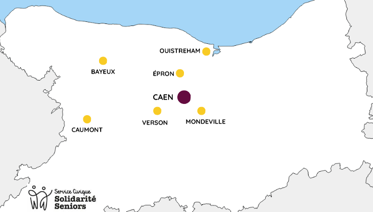

Qu'est ce qu'on propose ? Visites de convivialité à domicile gratuites Discuter ensemble Jeux de société Activités manuelles Balades Aide numérique Activités collectives Quand ? Du mardi au jeudi Jusqu'en juin 2026 (reprise en novembre 2026) Où ? 